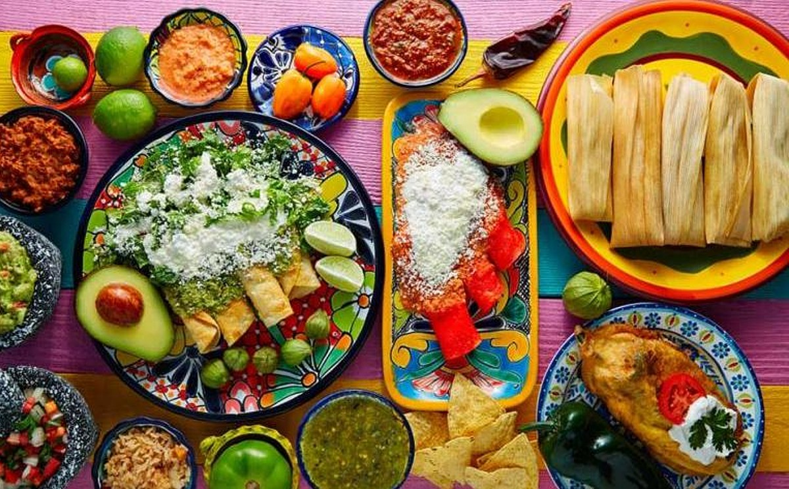
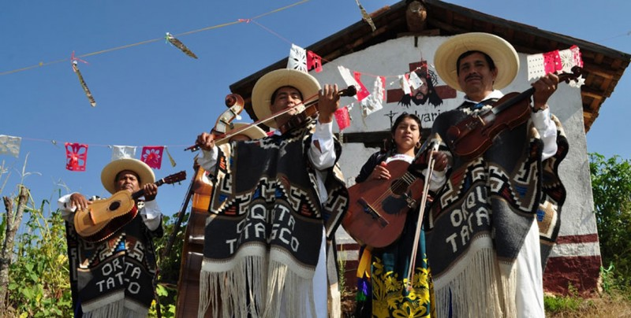
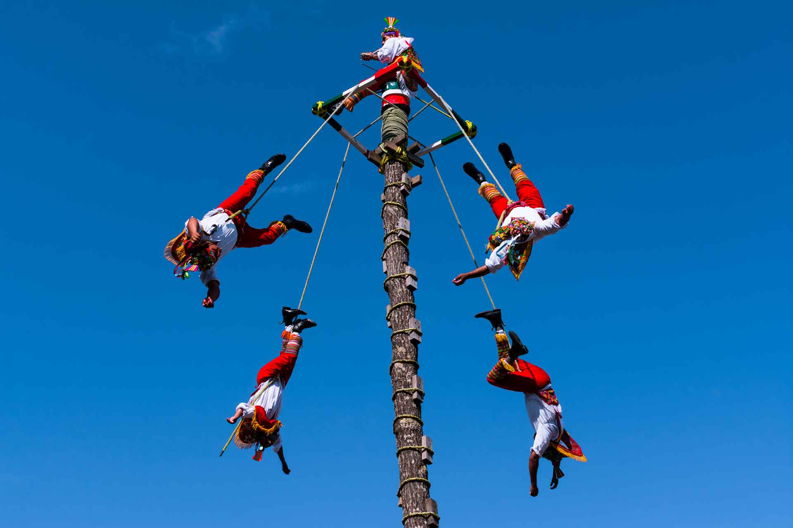
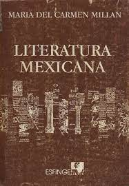
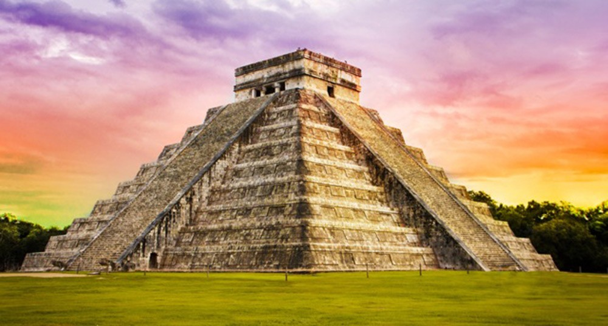

comidas
La comida mexicana es famosa en todo el mundo. Platos como tacos, tamales, enchiladas, mole, guacamole y chiles en nogada son ejemplos de la rica gastronomía mexicana. El tequila y el mezcal también son bebidas emblemáticas de Méxic
musica
La música mexicana es variada e incluye géneros como mariachi, ranchera, norteña, banda, cumbia y música tradicional indígena. El mariachi, en particular, es un símbolo icónico de la música mexicana
danzas
México tiene una variedad de danzas tradicionales, como el Jarabe Tapatío (el baile del sombrero) y la Danza de los Voladores, que son expresiones culturales y rituales.
arte y artesania
México tiene una tradición artística impresionante que incluye pintura, escultura, cerámica y arte textil. Destacan artistas como Frida Kahlo y Diego Rivera, así como la tradicional cerámica de calavera y las coloridas artesanías indígenas.

lucha libre
La lucha libre mexicana es un deporte y una forma de entretenimiento muy popular en México. Los luchadores, conocidos como "luchadores", usan máscaras y realizan acrobacias en el ring.

literatura
México tiene una rica tradición literaria que incluye escritores famosos como Octavio Paz, Carlos Fuentes y Juan Rulfo. También es conocido por su poesía, cuentos y novelas.
arquitectura
La arquitectura mexicana es diversa y abarca desde las antiguas pirámides hasta las coloridas casas coloniales y las modernas estructuras arquitectónicas. Destacan lugares como la Ciudad de México, Puebla y Oaxaca.
